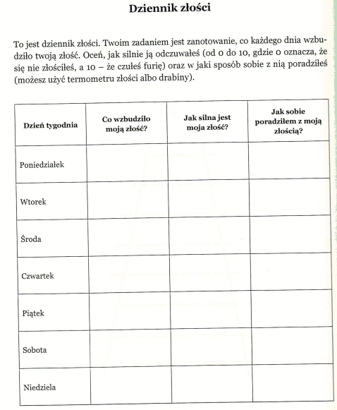

Nauczanie zdalne
Klasa 7A
wychowawca Ewa Lipińska-Krzemianowska
Piątek 24.04.2020r
WYCHOWANIE FIZYCZNE - CHŁOPCY
Temat: Ćwiczenia kształtujące
Rozpoczynamy kolejne zajęcia wychowania fizycznego.Zanim podam Ci propozycję ćwiczeń do wykonania w domu,przypominam,że ćwiczymy tylko
wtedy ,kiedy jesteśmy zdrowi,jeśli źle się czujesz lub coś Cię boli, to nie ćwicz!
Ćwiczymy w stroju sportowym.
Zaczynamy od rozgrzewki ( 10 ćwiczeń poznanych na lekcjach wf) ok.10-15 min.
Propozycja ćwiczeń na aktywność w domu:
1. Bieg w miejscu z wysokim unoszeniem kolan (liczymy do 30)
2. Z przysiadu podpartego wykonaj 10 wyskoków w górę
3. Z przysiadu podpartego ,wyrzuty złączonych nóg w tył-wykonaj 10 razy
4. Stojąc unoś wysoko kolana i klaszcz pod nimi(wykonaj to w jak najszybszym tempie) - liczymy do 30
5. Z przysiadu podpartego wykonaj 10 wyskoków w górę
6.W leżeniu na plecach wykonaj 10 brzuszków ( 3x)
Po każdym ćwiczeniu rozluźniamy mięśnie
Każdą serię powtórz 2 razy ,przerwa pomiędzy seriami ok.10 min.
Na dzisiaj mam dla Ciebie także zadanie domowe ,które musisz napisać dzisiaj
i wysłać na mój adres mailowy podany przez wychowawcę Zadanie piszemy
na ocenę,
Treść zadania: Na czym polega prozdrowotny styl życia.
Proszę o odpowiedzi krótkie , kilku zdaniowe.Dziękuję
ZAJĘCIA TERAPEUTYCZNO -USPRAWNIAJĄCE -PLASTYCZNE
Temat : Kwiaty na łące - mniszek
Obejrzyj film. Dowiesz się jak w prosty sposób można namalować dmuchawce.
https://www.youtube.com/watch?v=FpvIOpciq2Y
Wzorując się na filmie wykonaj swoją własną kompozycję. Do wykonania pracy będą Ci potrzebne pędzle, farby , nożyczki, kolorowa kartka z bloku, rolka po papierze , korki z butelek, wata, patyczki kosmetyczne.
ZAJĘCIA TERAPEUTYCZNO -USPRAWNIAJĄCE -RUCHOWE
Temat i zadanie wysłane pocztą elektroniczną do rodziców
USPRAWNIANIE TECHNIK SZKOLNYCH- JĘZYK POLSKI (Laura, Julka, Sara, Kinga, Emilka)
https://vod.tvp.pl/video/szkola-z-tvp-klasa-7,jezyk-polski-21042020-lekcja-2,47525868
posłuchajcie lekcji
ZAJĘCIA REWALIDACYJNE- USPRAWNIANIE MOWY
Usprawnianie mowy- zestaw ćwiczeń wysłany na grupę logopedyczną Messenger
CHEMIA
Temat: Powtórzenie materiału.
1. Napisz wzór chemiczny wody.
2. Uzupełnij
Woda:
Stany skupienia - 1......................2..........................3..........................
Barwa-
Zapach-
Temperatura wrzenia-
3. Do dwóch garnków wlano tyle samo wody. Jeden postawiono w chłodnym miejscu, drugi podgrzewano na kuchence. W którym garnku szybciej wyparuje woda?
4. Jest temperatura + 6 stopni C. Spadł śnieg. Co się z nim stanie?
5. Wykonaj obliczenie
Ile substancji znajduje się w 50 g, 10 % roztworu?
GEOGRAFIA
Temat: Podsumowanie wiadomości.
Przepisz do zeszytu i uzupełnij zdania właściwymi przykładami usług( wybierz po 1 przykładzie- turystyczne, pocztowe, transport):
Usługi
Informacyjne to...
Dystrybucyjne to...
Rekreacyjno-zdrowotne to...
2. Przepisz do zeszytu poniższe nazwy miejscowości wraz z ich opisem:
A) Wieliczka
B) Malbork
C) Toruń
a) Średniowieczna budowla warowna
b) Zabytkowa kopalnia soli
c) Średniowieczny zespół miejski
Podkreśl co dominuje w polskim eksporcie:
jachty, sprzęt AGD, ropa naftowa, tablety
zadanie wyślij na adres : boz_lis@interia.pl
Obejrzyj krótki film z Kopalni Soli w Wieliczce
https://www.youtube.com/watch?v=m7a_-BW0Fkw&list=PLxBBt5wRZ_PPtchWAxDyda_p3zskf2JQj&index=5
zachęcam Was do obejrzenia wszystkich filmów na str:
https://www.kopalnia.pl/turysta-indywidualny/o-kopalni/zostan-w-domu-kopalnia-soli-wieliczka-zaprasza
JĘZYK POLSKI
Temat: Wyprawa starego Santiaga
Obejrzyj film Stary człowiek i morze
https://www.youtube.com/watch?v=fSE-oC9cUoo
Zadanie: Odpowiedz na pytanie : Jak nazywał się główny bohater ?
Pozdrawiam
MATEMATYKA
Temat: Potęga o wykładniku naturalnym
zad. 1.
Obejrzyj film. Przepisz przykłady z filmu do zeszytu. Słuchaj objaśnień
https://www.youtube.com/watch?v=j8ioOqkaVn4
Zad.2.
Zamień liczby mieszane na ułamek niewłaściwy, a następnie ułamek niewłaściwy podnieś do potęgi drugiej - jak w przykładzie:
1) .Zamieniam na ułamek niewłaściwy
2 ? =( 2·3 +1) : 3 = 7/3
2) podnoszę do potęgi drugiej
( 7/3)2 = 7/3? 7/3 = 49/9
3 ? =
2 3 =
1 3 =
RELIGIA
Temat: W sakramentach świętych otrzymujemy Boże dary.
SIEDEM SAKRAMENTÓW. - ppt video online pobierz
Sakramenty są skutecznymi znakami łaski, ustanowionymi przez Chrystusa i powierzonymi Kościołowi. Przez te znaki jest nam udzielane życie Boże. Jest ich siedem: chrzest, bierzmowanie, Eucharystia, pokuta, namaszczenie chorych, kapłaństwo i małżeństwo. Sakramenty te obejmują wszystkie ważne momenty życia chrześcijanina: sprawiają narodzenie i rozwój chrześcijańskiego życia wiary, uzdrowienie i dar posłania.
Narysujcie symbole sakramentów świętych do zeszytu. Przeczytajcie poniższy tekst i napiszcie w zeszytach jakie dary otrzymujemy w każdym z siedmiu sakramentów świętych.
http://oczamiduszy.pl/sakramenty-boze-dary/
Podczas wieczornej modlitwy podziękujcie Panu Jezusowi za sakramenty święte.
Czwartek 23.04.2020r
CHEMIA
Temat: Stężenie procentowe roztwory
Dzisiaj poćwiczymy jeszcze raz obliczenia.
Obejrzyj filmik
https://www.youtube.com/watch?v=x_b5kl0l6Xs
i korzystając z jednego z 3 sposobów oblicz
Ile substancji znajduje się w 50 g, 5 % roztworu?
FIZYKA
Temat: Ciśnienie hydrostatyczne.
zapisz do zeszytu;
W otwartych zbiornikach wodnych panuje ciśnienie hydrostatyczne tym większe im większy jest słup wody i im większa jest gęstość cieczy. Związane jest to z działaniem siły ciężkości zarówno wody jak i powietrza (wartości te się sumują).
zad.1.
Zobacz doświadczenia
https://www.youtube.com/watch?v=EJRaVhpumrE&t=13s
Zapisz wzór z którego można obliczyć wartość ciśnienia hydrostatycznego oraz zapisz co oznaczają jego zmienne p, h ,g, d.
MATEMATYKA
DZIAŁ POTĘGI
Temat: Potęga o wykładniku naturalnym
obejrzyj film:
https://www.youtube.com/watch?v=bZXKdE4TzWo
Zad 1.
Zrób do zeszytu przykłady z filmu
obejrzyj film:
https://epodreczniki.pl/a/potega-o-wykladniku-naturalnym/DWf4w8Gvv
Zad.1. wykonaj online ćw.1.
zapisz do zeszytu
Potęgowanie to mnożenie n razy (n to wykładnik potęgi) tej samej liczby (podstawy)
przez siebie.
np. 53 = 5 5 5 ,
82 = 8 8
zapamiętaj!
a1 = a , a? = 1
np. 45 1 = 45 , 8974°= 1
Zad.2.
Zapisz w postaci potęgi:
3ˇ3ˇ3ˇ3ˇ3ˇ3 = 3ˇ3ˇ3ˇ3 =
2 ˇ2 ˇ2 ˇ2 ˇ2 = 5ˇ5ˇ5ˇ5 =
2 ˇ2 ˇ2 =
10ˇ10 =
JĘZYK POLSKI
Temat O intencjach wypowiedzi
Funkcje komunikacyjne
Notatka do zeszytu:
Funkcje komunikacyjne rozważane są, gdy wypowiedziom towarzyszą rozmaite intencje komunikacyjne. Wyróżnia się następujące funkcje komunikatu:
przedstawieniowa (poznawcza, informatywna, informacyjna) skupia się na przekazaniu treści informacyjnej np. w encyklopediach, słownikach, pracach i książkach naukowych.
ekspresywna (emotywna) służy wyrażaniu uczuć i emocji za pomocą słów np. w pamiętnikach, częściowo w reportażach
impresywna (konatywna) służy wpływaniu na czyjeś poglądy, uczucia i czyny np. w hasłach reklamowych, gdy próbujemy kogoś do czegoś przekonać.
fatyczna służy do podtrzymania rozmowy, rozpoczęcia jej lub zakończenia ogółem do nawiązania kontaktu. Charakterystyczne słowa to: Dzień dobry, przepraszam, aha, naprawdę? itp.
metajęzykowa jest to przekazywanie informacji o języku za pomocą języka np. formuły gramatyczne, hasła w słownikach gramatycznych. Przykład: Zdanie złożone ma co najmniej dwa orzeczenia
poetycka (estetyczna) skupienie uwagi na walorach estetycznych komunikatu (por. styl artystyczny).
Funkcje pozakomunikacyjne
Wypowiedzi jednak mogą służyć nie tylko komunikowaniu w pełnym znaczeniu tego słowa. Funkcje te określa się jako:
sprawcza kształtuje i zmienia rzeczywistość, np. ogłaszam was mężem i żoną, nadaję ci imię.
magiczna (stanowiąca) wiąże się z wierzeniami, religią - wypowiedzenie słów ma, zdaniem mówiącego, wpłynąć na rzeczywistość, przy czym przekonanie to wynika z wyznawanej religii, przesądu itp., np. czary, przekleństwa, modlitwy.
ludyczna
charakteryzująca za jej pomocą nadawca komunikatu przekazuje nam informacje o sobie. Robi to jednak nieświadomie. Np. zastosowanie w tekście gwary góralskiej pozwala stwierdzić, że nadawca jest Góralem, pochodzi z okolic Zakopanego.
Zadanie: Przeczytaj poniższe zdanie i napisz , co czuła wypowiadająca je osoba.
Chciałam zapaść się pod ziemię.
JĘZYK ANGIELSKI
Dzisiaj porozmawiamy o zmysłach wzroku, słuchu, zapachu, smaku i dotyku, a także o tym, co pomaga nam w doświadczaniu tych zmysłów.
Lesson
Topic: Five senses pięć zmysłów.
Obejrzyj krótki filmik o zmysłach -
https://www.youtube.com/watch?v=LNajQTnZviQ , a następnie postaraj się uzupełnić puste miejsca w notatce poniżej (oczywiście notatkę wykonujemy w zeszycie)
Senses zmysły
Sense of sight zmysł wzroku
see ..........................
I can see...........................
Eyes ..........................
Sense of hearing zmysł słuchu.
Hear - ..........................
I can hear. ..........................
Ears - ..........................
Sense of smell zmysł zapachu.
Smell -..........................
I can smell...........................
Nose - ..........................
Sense of touch zmysł dotyku.
Touch - ..........................
Feel - ..........................
I can feel. ..........................
I can touch. ..........................
Skin -..........................
(tłumaczenie tłumaczenia nie trzeba przepisywać ;) przy zmyśle dotyku, jak już pewnie zauważyliście można używać dwóch słówek: touch dotykać kiedy dotykamy jakieś przedmiotu i dzięki temu czujemy czy coś jest twarde, miękkie, gładkie chropowate itd, ale mamy też słówko feel czuć, które też odnosi się do dotyku, kiedy przez dotyk czujemy czy coś jest zimne, ciepłe, gorące, mokre, suche itd.)
Sense of taste zmysł smaku
Taste -..........................
I can taste - ..........................
Tongue - ..........................
Obejrzyj film jeszcze raz i postaraj się powtarzać po angielsku poznane dzisiaj słówka. Powtórz przynajmniej dwa razy (ale możesz więcej ;)
ZAJĘCIA TERAPEUTYCZNO -USPRAWNIAJĄCE- TAŃCE
Patrycja B.,Sara M, Laura M,Sebastian Ch,Maciej K
#zostań w domu#tańcz w domu!!!
Dzień dobry . Pracujemy zdalnie i niestety też zdalnie będziecie się uczyli układów choreograficznych. Przesyłam Wam link (poznajecie kto tańczy ?) i proszę uczcie się najpierw tylko i wyłącznie kroków . Pracę rąk zostawimy na koniec układu. Na początek powtarzajcie sobie tylko 2 lub 3 pierwsze figury. Mam nadzieję że dacie radę.Jesteście bardzo zdolni.
https://youtu.be/O9O-v-vNAw0
ZAJĘCIA TERAPEUTYCZNO -USPRAWNIAJĄCE -RUCHOWE
Temat i zadanie wysłane pocztą elektroniczną do rodziców
ZAJĘCIA ARTYSTYCZNE -MUZYCZNE (Patryk H., Emilia O., Oleh K.)
Temat i zadanie wysłane pocztą elektroniczną do rodziców.
ZAJĘCIA REWALIDACYJNE- USPRAWNIANIE MOWY
Temat i zadanie wysłane na grupę logopedyczną na messenger
TECHNIKA/PRACOWNIA GOSPODARSTWA DOMOWEGO
Zadanie 1
Przepisz temat lekcji do zeszytu i podpunkty od 1 do 7.
Temat: Haftowana serwetka (1, 2)
I. Materiały i narzędzia potrzebne do wykonania haftu ręcznego: ołówek, kawałek tkaniny, igłę z dużym oczkiem, nożyczki i kolorowa nitki, tamborek( jeśli ktoś ma w domu).
II. Plan pracy:
1. Przygotowanie materiałów i narzędzi
2. Wycięcie z tkaniny kwadratu o wymiarach 20cmx 20cm
3. Narysowanie na tkaninie linii za pomocą ołówka
4. Nawlekanie nitki na igłę i zrobienie supełka
5. Wyszywanie ściegów wg wzoru
6. Prace wykończeniowe
7. Pranie i prasowanie serwetki
Zadanie 2
Obejrzyj film. Zobaczysz jak można zrobić serwetkę wykorzystując różne ściegi ozdobne.
https://www.youtube.com/watch?v=kKnBUa4l2k4
Obejrzyj jeszcze raz tylko fragment filmu do 2:29 minuty.
https://www.youtube.com/watch?v=kKnBUa4l2k4
Rozpoczniemy wyszywać serwetkę dwoma prostymi ściegami.
1. Ścieg przed igłą.
2. Ścieg za igła.
Wzorując się na filmie wykonaj na swojej tkaninie dwa pierwsze ściegi. Prześlij zdjęcie swojej pracy na mój adres e mail.
Za tydzień poznamy kolejne ściegi ozdobne.
TECHNIKA/ GRUPA STOLARNIA
Proszę zapisać w zeszycie:
Lekcja
Temat: Metale. Jak przerobić metalowe puszki?
Materiały:
- puszka po fasoli , kukurydzy itp.
- kawałek tapety lub kolorową kartkę papieru
- klej do tapet lub klajster zrobiony z mąki
Narzędzia:
- linijka,
- nożyczki,
- pędzelek
Odwiedź stronę
https://www.piafka.pl/2016/03/diy-jak-przerobic-metalowe-puszki.html
Spróbujcie wykonać podobny pojemnik z puszki.
Zdjęcie gotowej pracy przyślijcie na mój e-mail
Powodzenia
Przepis na klej z mąki.
Do garnka wsypujemy po jednej czubatej łyżce mąki ziemniaczanej oraz mąki pszennej. Dolewamy ok. pół szklanki zimnej wody. Mieszamy całość, aż do pozbycia się gródek i uzyskania jednolitego masy. Następnie zalewamy uzyskany roztwór szklanką wrzątku. Cały czas mieszamy. Klej powinien mieć konsystencję ciasta na naleśniki.
Środa 22.04.2020r
JĘZYK ANGIELSKI
Emocje i uczucia wynikają często z sytuacji, w których się znajdujemy wyrażamy je za pomocą przymiotników, których nazwy dzisiaj poznamy.
Lesson
Topic: Feelings and emotions uczucia I emocje.
Dzisiaj zaczniemy od filmu:
https://www.youtube.com/watch?v=o5jZIswSfSE
Po obejrzeniu filmu wypisz słówka oznaczające emocje do zeszytu i przetłumacz je na język polski. Jeżeli ich nie znasz lub nie domyślasz się ich znaczenia sprawdź w słowniku:
https://pl.pons.com/t%C5%82umaczenie
Excited
Sad
Shy
Thirsty
Angry
Scared
Happy
Bored
Worried
Hungry
Sleepy
Tired
Teraz, kiedy już znasz znaczenie wszystkich słówek, obejrzyj film jeszcze raz i postaraj się powtarzać słowa.
ZAJĘCIA TERAPEUTYCZNO -USPRAWNIAJĄCE MUZYCZNE
e-mail:muzykamg@wp.pl
(Patryk H. i Damian P.)
Odpowiedz pisemnie na pytanie: Jaki to instrument?
,, Ten instrument dęty zdobył dużą popularność w średniowiecznej Europie jako instrument ludowy i wojskowy. Podstawowymi elementami jego budowy są skórzany worek pełniący funkcję rezerwuaru powietrza oraz połączone z nim piszczałki stroikowe. Instrument może być nadymany ustnie lub za pomocą mechanicznego ręcznego mieszka."
ZAJĘCIA ARTYSTYCZNE
Temat i zadanie wysłane pocztą elektroniczną do rodziców
USPRAWNIANIA MATEMATYKA
kl.7a usprawnianie z matematyki (Olek K, Laura M, Sara M, Kinga N)
Ćwiczymy przekształcanie wzorów.
Przepisz występujące w filmie przykłady z każdego podpunktu: a,,b ,c,d
z rozwiązaniami.
https://www.youtube.com/watch?v=41ajAsyyCRI
USPRAWNIANIA JĘZYK POLSKI
Zadanie; Przeczytaj dowolną książkę -wypisz jej bohaterów . Czas 3 tygodnie
BIOFEEDBACK
Zestaw ćwiczeń wysłany pocztą elektroniczną do rodziców.
WYCHOWANIE FIZYCZNE DZIEWCZYNKI
TEMAT: Kształcenie cech motorycznych pod kątem p.nożnej-ćwiczenia ogólnorozwojowe
#zostańwdomu#trenuj w domu !!!
Przypominam o zasadach bhp podczas ćwiczeń w domu,tak jak na lekcjach wf w szkole. Proszę również pamiętać, że ćwiczymy tylko i wyłącznie jak jesteśmy zdrowi.
Pamiętajmy przed rozpoczęciem ćwiczeń ,aby zrobić 10 minutową rozgrzewkę (ćwiczenia pamiętamy z lekcji)
Potrzebne przybory: ręcznik
Proszę zrobić proste ćwiczenia z autorem. ĆWICZENIA POWTARZAMY DWUKROTNIE .
https://youtu.be/HriJ5zXHDJ4
WYCHOWANIE FIZYCZNE CHŁOPCY
Temat : Ćwiczenia ogólnorozwojowe
Zapraszam na zajęcia z wychowania fizycznego w ramach nauczania zdalnego.W tym tygodniu wasze zadanie to wykonywanie ćwiczeń ogólnorozwojowych..Przypominam o wykonaniu rozgrzewki.
Pamiętajcie jednak,aby ćwiczyć tylko wtedy,kiedy jesteście zdrowi .Jeśli cokolwiek wam dolega,żle się czujecie albo coś was boli to nie ćwiczymy.
Ćwiczenia są wam dobrze znane i nie powinny Wam sprawić problemów.
Przed rozpoczęciem ćwiczeń wykonujemy rozgrzewkę ( 10 ćwiczeń ) ok. 10 - 15 minut.Wszystkie ćwiczenia znacie z lekcji WF , wiecie jak je bezpiecznie i prawidłowo wykonać.
Zachęcam do aktywności w tym trudnym dla nas czasie .
Poniżej zamieszczam moją propozycję ćwiczeń na aktywność w domu :
1. ćwiczenia znane wszystkim " pajacyki" - 10 powtórzeń
2. przysiady - 15 powtórzeń ( 3x)
3.brzuszki - 15 powtórzeń ( 2x)
4. pompki klasyczne { mogą być na kolanach} - 12 powtórzeń
5. wchodzenie na stopień { może być niskie krzesło} - 15 powtórzeń
6. W lekkim rozkroku wykonaj 5 skłonów do prawej nogi i 5 skłonów do lewej
Po każdym ćwiczeniu rozluźniamy mięśnie
Każdą serie powtarzamy 2 razy lub w zależności od samopoczucia Przerwa między seriami ok.10 min.Całość ćwiczeń nie powinna trwać dłużej niż 2 godz. lekcyjne
Zachęcam do korzystania z dostępnych w internecie wielu propozycji ćwiczeń fizycznych do samodzielnego wykonania w domu,
np na You Tube Akademia NFZ .
JĘZYK POLSKI
Temat: Gdzie szukać odpowiedzi na pytania o to , jak żyć?
Notatka:
Dezyderata -poemat napisany przez Maxa Ehrmanna, zawierający wskazówki na temat dobrego życia.
Utwór powstał w 1927 r. W 1933 r. autor złożył go w formie życzeń na Boże Narodzenie dla przyjaciół. Dobre życie wg. Autora to:
-przechodź spokojnie przez hałas i pośpiech,
-wypowiadaj swoją prawdę jasno i spokojnie,
-wysłuchaj też innych,
-bądź sobą,
-bądź na dobrej stopie ze wszystkimi.
Przeczytaj utwór:
https://ising.pl/max-ehrmann-desiderata-agnieszka-skraskowska-2kedq9-tekst
Posłuchaj piosenki;
https://www.youtube.com/watch?v=l1RFTn-4yCo&feature=youtu.be
HISTORIA
TEMAT: Skutki cywilizacyjne i kulturowe wielkiej wojny
Oglądnij krótki film:
https://www.youtube.com/watch?v=aeNVCHKfNVs
I wojna była konfliktem, który pozostawił po sobie szereg poważnych konsekwencji, zarówno społecznych, jak i gospodarczych oraz ekonomicznych. Skutkiem działań wojennych było zmniejszenie się liczby mieszkańców Europy. Podczas wojny poległo blisko 9 mln ludzi. Doszło również do zachwiania równowagi demograficznej na froncie przede wszystkim ginęli mężczyźni. Nie bez znaczenia dla demografii była pandemia grypy, tzw. hiszpanki. Niszczono dobra materialne. Stosowano rabunkową gospodarkę surowcową, eksploatowano nadmiernie fabryki. Doszło do hiperinflacji.
GEOGRAFIA
Temat: Handel.
Odpowiedzi zapisz w zeszycie:
Wymień 3 produkty, które masz w domu i zostały wyprodukowane w Polsce?
Wymień 3 produkty, które masz w domu i zostały wyprodukowane za granicą?
Co to jest handel?
Przeczytaj:
Wiesz już, że w domu są produkty wyprodukowane w kraju np. mleko, sery jak również przywiezione z innych krajów np. kawa, herbata, banany. W żadnym państwie produkcja nie jest tak rozwinięta, że wystarczała na zaspokojenie potrzeb całego społeczeństwa. Dlatego duże znaczenie ma handel zagraniczny, który polega na odpłatnej wymianie dóbr i usług między państwami.
Zapisz do zeszytu:
Import- zakup towarów w innym kraju
Eksport- sprzedaż towarów za granicę
Wśród towarów importowanych są: samochody, komputery, ropa naftowa, gaz ziemny, kosmetyki, owoce, leki.
Eksportujemy głównie: autobusy, pojazdy szynowe, sprzęt AGD i RTV, jachty, meble, okna, drzwi, artykuły żywnościowe.
PESA Bydgoszcz eksportuje pociągi do Włoch i Niemiec. Zobacz na filmie, jak wygląda nowoczesny pociąg.
https://www.youtube.com/watch?v=CUUHKfIrMtE
Wtorek 21.04.2020r
j. polski
matematyka
historia
religia
biologia
j. ang/ informatyka
plastyka
JĘZYK POLSKI
Temat: Elementy aktu komunikacji
Notatka:
Składniki aktu komunikacji :
-nadawca przekazuje komunikaty,
-odbiorca odbiera komunikaty,
-komunikat zawiera różne informacje,
-kod to porozumienie między nadawcą a odbiorcą , jest nim język mówiony lub pisany,
-kontekst tworzony jest przez to, co zostało powiedziane wcześniej i co zostanie powiedziane później .
Nadawca i odbiorca mogą się porozumieć pod warunkiem, że znają kody.
Inne kody to np. język migowy, alfabet Braillea, piktogramy.
Zobacz jak w języku migowym można się przywitać :
#wkrecsiewmiganie
MATEMATYKA
Temat Powtórzenie wiadomości. Równania i przekształcanie wzorów.
zad. 1.
Obejrzyj film.. Słuchaj objaśnień
https://epodreczniki.pl/a/film/D14AL9JyW
Oblicz równania:
a.
3x = x+ 8
b.
5x = 2x + 12
c.
3x -4 = 5
zad.2 .
Obejrzyj film. Przepisz przykłady z filmu do zeszytu. Słuchaj objaśnień
https://www.youtube.com/watch?v=qaCVyvlWn5I&t=59s
HISTORIA
TEMAT: Konferencja pokojowa w Paryżu.
Oglądnij film od 3:18 minuty do końca:
https://www.youtube.com/watch?v=oPLcNvrfcTI
Na podstawie filmu napisz kto reprezentował Polskę na konferencji w Paryżu.
.................................................................................................................................
Konferencja pokojowa była zorganizowana w Paryżu po zakończeniu I wojny światowej. Trwała od 18 stycznia 1919 do 21 stycznia 1920 roku. Brało w niej udział 27 zwycięskich państw.
Główne postanowienia traktatu:
- Niemcy spłacą odszkodowanie wojenne
- Niemcy zostaną pozbawieni obowiązku służby wojskowej 100 armia
- Niemcy mają zakaz posiadania lotnictwa, łodzi podwodnych oraz broni pancernej.
- Wprowadzono 50 km strefę zdemilitaryzowaną nad Renem.
- Powołano Ligę Narodów.
RELIGIA
Temat: Eucharystia chlebem dającym życie wieczne.
Obejrzyj film:
https://www.youtube.com/watch?v=jI4E91uNSOc
https://www.youtube.com/watch?v=juaABQpIqUg
Napisz w zeszycie czym dla Ciebie jest Komunia Święta.
Narysuj w zeszycie Kielich i Hostię.
Pozdrawiam. Dobrego Dnia.
BIOLOGIA
Podręcznik z biologii Puls Życia kl. 7 dostępny na stronie -
https://www.nowaera.pl/naukazdalna
Temat : Ucho narząd słuchu i równowagi.
1. Przeczytaj : Budowa ucha (201 str. ) , Zmysł równowagi (202 str.)
2. Obejrzyj filmik:
https://www.youtube.com/watch?v=g0mv5C_--lo
https://www.youtube.com/watch?v=pooeW9Oop5Q
3. Zapoznaj się ze schematem
- Rozpoznawanie dźwięków ( 200 str.), Położenie ciała ( 202 str.)
W zeszycie wykonaj tylko zadanie nr.1.
Zad 1. Wykreśl kolorowe wyrazy tak , aby powstały zdania prawdziwe.
a). Narządem równowagi są kosteczki słuchowe / kanały półkoliste .
b). Receptory słuchu znajdują się na błonie bębenkowej / w ślimaku.
JĘZYK ANGIELSKI
Na ostatniej lekcji dowiedzieliśmy się, że czasowniki możemy podzielić na statyczne i dynamiczne. Poznaliśmy już czasowniki dynamiczne, dzisiaj skupimy się więc na czasownikach statycznych.
Lesson
Topic: State Verbs czasowniki statyczne.
Czasowniki statyczne wyrażają stany, uczucia, emocje. Czasowniki należące do tej grupy nie posiadają formy ciągłej (oprócz kilku wyjątków), a co za tym idzie nie występują w czasach Continuous.
Czasowniki statyczne możemy podzielić na cztery grupy:
1. Emotion emocje
Love kochać
Hate nienawidzić
Like lubić
Need potrzebować
Adore uwielbiać
2. Possesion własności
Have mieć
Own posiadać
Belong przynależeć
3. Senses zmysły
See widzieć
Smell powąchać (czuć zapach)
Hear słyszeć
Feel czuć
Taste Smakować (czuć smak)
Thoughts myśli
Understand rozumieć
Belive wierzyć
Forget zapominać
Remember pamiętać
Realize Zdawać sobie sprawę
Oczywiście nie są to wszystkie czasowniki statyczne my poznajemy jedynie te wybrane, najczęściej używane.
Aby posłuchać wymowy słówek z tabeli spójrzcie na film od dwudziestej piątej do pięćdziesiątej piątej sekundy (0:25 0:55):
https://www.youtube.com/watch?v=8m6LvVQ-DQ4
Oglądamy film w ramach czasowych, które podałem i powtarzamy słówka (można przy okazji podawać tłumaczenie) oczywiście na czas powtarzania wciskamy pauzę.
Chętni mogą oczywiście zobaczyć cały film J
Pozdrawiam!
Klasa 7 INFORMATYKA
Temat: Projektowanie tabeli i stosowanie funkcji arkusza kalkulacyjnego - cd. Korzystamy w formule z funkcji średnia.
1. Wejdź na stronę e- podręcznik online
https://ebook.migra.pl/dlaucznia.php?book=67 str.172
2. Zapoznaj się z fragmentem z książki od ramki z kluczykiem (Aby użyć w formule funkcji można
) do ćwiczenia 6. (str. 172-173)
3. Przerobimy to krok po kroku w ćwiczeniu.
Wejdź na stronę
http://www.zpsnysa.pl/cwiczenia.html
Zrobione zadanie zapisz jako średnie i prześlij na mojego e-maila.
PLASTYKA - KLASA 7
TEMAT : DRZEWO projekt muralu
/Sztuka współczesna sztuka ulicy mural /
MURAL to malowidło ścienne dużych rozmiarów umieszczane najczęściej na budynkach,
Obejrzyjcie krótki film:
https://www.youtube.com/watch?v=Bp8xbGyrKRs
Narysujcie własny projekt muralu który mógłby ozdobić jakiś budynek w mieście.
Tematem jest DRZEWO ale od Was zależy jak je zaprojektujecie może to być jesienne drzewo
z kolorowymi liśćmi albo drzewo na którym siedzą ptaki albo kwitnąca na wiosnę jabłonka
lub inny pomysł.
Do wykonania pracy będzie potrzebna : kartka papieru z bloku rysunkowego lub technicznego
ołówek, kolorowe pisaki lub kredki.
Zatrzymajcie prace ,a najlepiej zróbcie zdjęcie i wyślijcie na adres beata.chmiel@wp.pl do oceny.
Poniedziałek 20.04.2020r
kl. 7a Matematyka 20. 04
Temat : Przekształcanie wzorów
Zad.1.
Obejrzyj film. Przepisz przykłady z filmu do zeszytu. Słuchaj objaśnień
https://www.youtube.com/watch?v=lxGIaXNy_eQ
zad 2.
Wyznacz wskazaną zmienną ze wzoru:
a) q = ? U = W : q ( znak dzielenia zastępuje kreska ułamkowa i odwrotnie)
b) U =? R = U : I
c ) F = ? p = F : S
J. polski klasa 7A
Temat: Brzmią tak samo , znaczą co innego
Notatka:
W polszczyźnie funkcjonują wyrazy zwane HOMONIMAMI , które mają takie samo brzmienie, ale zupełnie inne znaczenie, na przykład :
zamek-urządzenie do zamykania drzwi albo budowla, rezydencja królewska.
Napisz dwa różne znaczenia wyrazów: golf i piła
WYCHOWANIE FIZYCZNE- DZIEWCZYNY
KLASA - 7
TEMAT: Technika i taktyka piłki siatkowej
#zostańwdomu#trenuj w domu !!!
Przypominam o zasadach bhp podczas ćwiczeń w domu,tak jak na lekcjach wf w szkole. Proszę również pamiętać, że ćwiczymy tylko i wyłącznie jak jesteśmy zdrowi.
Pamiętajmy przed rozpoczęciem ćwiczeń ,aby zrobić 10 minutową rozgrzewkę (ćwiczenia pamiętamy z lekcji)
Potrzebne przybory: piłka lub balon , papier toaletowy
Proszę wykonać w domu ćwiczenia z piłką lub papierem toaletowym tak jak na filmiku w miarę swoich możliwości.Każdy element ćwiczymy ok.2 min. ,powtórzmy to 6 razy.
Proszę się nie zniechęcać ,jeżeli nie mamy piłki tylko papier. Trzymam kciuki i wierzę że się uda.
https://youtu.be/f-kgTLaABmA
Zajęcia socjoterapeutyczne
Temat: Rozpoznawanie zdarzeń wzbudzających złość.
Złość jest emocją, która przedstawia nasze niezadowolenie. Często pojawia się w naszym życiu w różnych sytuacjach. Obejrzyj obrazki i zastanów się kiedy pojawia się ona w twoim życiu i jak sobie z nią radzisz. Czy można nad nią panować?

Kl.7a fizyka Temat: Prawo Pascala
zapisz do zeszytu:
Prawo Pascala mówi, że jeśli na zamkniętą w zbiorniku ciecz (lub gaz) działamy siłą to wytworzone w ten sposób ciśnienie działa jednakowo we wszystkich kierunkach i w całej objętości tej cieczy (gazu).
Wartość ciśnienia-siły parcia F na ściankę o powierzchni S obliczamy ze wzoru:
F = p·S p to ciśnienie jakie panuje w zbiorniku
Przyczyną występowania ciśnienia atmosferycznego (powietrza) i hydrostatycznego (wody) jest naciskanie warstw powietrza lub cieczy na warstwy znajdujące się poniżej.
Obejrzyj film :
https://www.youtube.com/watch?v=kBK-V3NTOn8&t=542s
Zad.
Odpowiedz gdzie znalazło zastosowanie prawo Pascala?
Biologia kl. VII
Podręcznik z biologii Puls Życia kl. 7 dostępny na stronie -
https://www.nowaera.pl/naukazdalna
20.04. 2020 r.
Lekcja
Temat : Oko narząd wzroku (str. 195)
1. Przeczytaj : Aparat ochronny (195 str. ) ,
2. Obejrzyj filmik:
https://www.youtube.com/watch?v=KIkHk__96Hg
3. Zapoznaj się ze schematem budowa oka ( 196 str.)
W zeszycie wykonaj tylko zadanie nr.1.
Zad 1.
Wypisz najważniejsze elementy aparatu ochronnego oka.
Dla chętnych - zadanie dodatkowe- Przerysuj schemat budowy gałki ocznej - to zadanie nie jest obowiązkowe, tylko dla chętnych.
Muzyka kl.VII
E-mail:muzykamg@wp.pl
Temat: Duet,tercet,kwartet,kwintet...
1.Pojęcia muzyczne:
Duet: 2 instrumenty lub głosy wykonujące utwór
Tercet: 3 głosy wykonujące utwór; trio- trzy instrumenty
Kwartet:zespół 4 wykonawców, instrumentalistów lub śpiewaków
Kwintet zespół 5 wykonawców, instrumentalistów lub śpiewaków
2.Folklor wielkopolski.
W Wielkopolsce już od XIX w.istnieje silna tradycja śpiewu chóralnego. Stolica regionu-Poznań od dawna był centrum działalności towarzystw śpiewaczych, a także licznych chórów. Na szczególną uwagę zasługują dwa:
a)Poznański Chór Katedralny-zał.w XIX w., jego działalność ściśle wiąże się z renesansem wykonawstwa dawnej muzyki polskiej,
b)Chór chłopięcy i męski Filharmonii poznańskiej ,,Poznańskie słowiki", założony i prowadzony kilkadziesiąt lat przez wybitnego chórmistrza Stefana Stuligrosza.
3.Dudy wielkopolskie- jednym z najważniejszych instrumentów muzycznych tego regionu są dudy oraz ich lokalna odmiana, zwana kozłem (już w XVII w. wychwalano ich donośny dźwięk)
(posłuchaj brzmienia instrumentu)
https://www.youtube.com/watch?v=Fi0W8c-7XehU
Usprawniania
kl.7a usprawnianie z matematyki (Maciek K, Damian M),(Sebastia Ch, Maciek Ch, Patryk H, )
Ćwiczymy przekształcanie wzorów.
Przepisz występujące w filmie po jednym przykładzie z każdego podpunktu: a,,b ,c, d, e (jeśli chcesz przepisz wszystkie przykłady)
z rozwiązaniami.
https://www.youtube.com/watch?v=41ajAsyyCRI
usprawniania j. polski ( Maciej, Olek, Patryk, Sebastian)
-Przeczytaj wiersz -wypisz wszystkie czasowniki (czasownik- Co robi? np. siedzi )
- Wracaj króliczku
Różowy króliczek po pokoju zmyka
prawie go złapałam, lecz z rąk się wymyka.
Uciekł mi pod stolik, potem pod komodę
skaczę jak króliczek, a złapać nie mogę!
Susa dał pod krzesło, błysnęły mu oczka
kicnął w kurz za szafę, wystraszył pajączka.
Pyłek otrzepuje z wąsików łapkami
hycnął i szybciutko schował się za drzwiami.
Wiem co zaraz zrobię, skuszę go marchewką
to króliczy przysmak, przyjdzie więc na pewno.
Dość już tej gonitwy, pochrupiemy razem
potem bądź znów grzeczny i wróć na obrazek
Archiwum
15-17.04
06-08.04
30.03-03.04
25-27.03